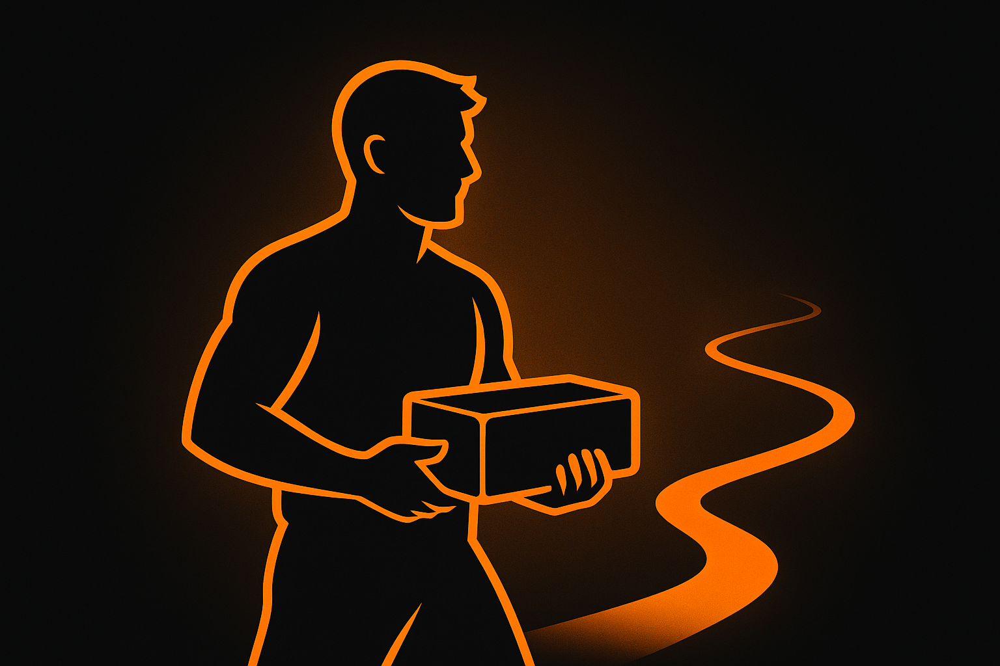

Smysl života chlapa
Co po tobě zůstane

Jednou ráno vstaneš a zjistíš, že ta slova „až jednou“ nastala přesně dnes. Nečekáš, až se to samo srovná, až přijde nálada, až někdo uzná tvoji snahu. Pochopíš jednoduchou věc: pohodlí je pauza, ne cíl. Chlap, který chce žít smysluplně, si sedne ke svému stolu – ať je to stůl s papírem, počítačem, ať je tvůj ponk či cokoli jiného – a začne. Ne proto, že se cítí skvěle, ale proto, že slíbil sám sobě, že po něm něco zůstane. Ne památná věta. Hotová práce. Klid doma. Spolehlivost v práci. Člověk, kterému se věnoval tak dlouho, až začal stát sám na svých nohou.
Pravda: zrcadlo, které tě vrací na zem
Bez pravdy je všechno jen přání a pohádky. Pravda není o sebemrskačství. Je to střízlivý pohled: co dnes dělám dobře, co flákám, kde si namlouvám, že „to beze mě nepůjde“. Pomáhá jednoduchý zvyk. Ráno si napiš tři věty: za co dnes nesu odpovědnost, jaký udělám první krok a co určitě nebudu dělat, i kdyby mě to svádělo. Večer si napiš další tři: co jsem opravdu udělal, kde jsem uhnul z toho, co jsem si řekl a co zítra udělám jinak. Ne romány, ale věty. Ne kvůli Instagramu, ale kvůli svědomí. Za měsíc máš v ruce zápisníček, který tě zná líp než tvoje výmluvy.
Pravda ti nastaví hranice. Když víš, jaké jsou tvé hranice, snáz řekneš „ne“ všemu, co tě od nich odvádí. Potřeba zavděčit se všem je jistá cesta k rozbití směru, kterým jsi chtěl jít. Hranice nejsou drzost. Hranice jsou plot, který chrání zahradu, na které makáš. Bez plotu se ti do ní nastěhuje kdeco – cizí plány, cizí práce, cizí drama. Pak se večer divíš, že jsi unavený a nic není hotové.
Odpovědnost: vezmi si na záda tolik, aby ses narovnal
Odpovědnost není těžítko, ale páka. Když něco neseš, rosteš. V rodině to znamená přinést domů klid, ne výbuchy. V práci to znamená dokončit úkol, ne se vymlouvat. U peněz to znamená střídmost a disciplínu, ne dobrodružství každý měsíc. V těle to znamená základní sílu, spánek a pohyb, ne věčné sliby „od pondělí“. Konkrétně: domluv se sám se sebou, že budeš držet pár jednoduchých standardů. Například: ráno neotvírám telefon, dokud jsem si nesplnil ranní rutinu. Nepřenáším špatnou náladu z práce na partnerku a děti. Co slíbím, to platí. Když něco pokazím, řeknu to nahlas a chybu napravím. Tyhle malé věci dělají chlapa víc než řeči o „poslání“.
Odpovědnost se ukáže hlavně ve chvílích, kdy to drhne. Když to jde, jde to každému. Rozhodující je, co uděláš, když se ti nechce, když se nedaří, když tě nikdo nepochválí. Smysl nestojí na potlesku. Stojí na návyku vracet se k práci, kterou sis zvolil, i když máš chuť utéct. Překvapí tě, jak rychle začne přicházet vnitřní klid – ne proto, že je lehko, ale protože víš, co dokážeš.
Řemeslo: vyber si jednu věc a dělej ji dost dlouho
Řemeslo nepotřebuje velká slova. Potřebuje čas, ticho a opakování. Ať učíš, programuješ, jezdíš, montuješ, píšeš nebo vedeš lidi, výsledek je stejný: když u toho vydržíš roky, vyroste v tobě jistota, kterou není třeba předvádět. Mladí kluci přeskakují každé tři měsíce z jedné věci na druhou a pak se diví, že se nikam neposunuli. Pokud chceš, aby po tobě něco zůstalo, vyber si jednu věc a drž se jí tak dlouho, až začne být vidět rozdíl. Prakticky: dej si minimálně tři pevné bloky týdně – klidně po 45 minutách – kdy se věnuješ čistě svému růstu v čemkoli, co děláš. Bez telefonu, bez přepínání. To je čas, kdy se staví základna tvého odkazu.
Řemeslo tě vychovává. Naučí tě zodpovědnosti za detail, za termín, za kvalitu. Zjistíš, že „stačí to“ je nejdražší věta na světě. A taky zjistíš, že dokonalost je dobrý sluha, ale zlý pán. Člověk, který stále ladí jeden šroubek, často nic nedokončí. Cílem je „poctivě hotovo“, ne „navždy rozděláno“. Hotová věc má hodnotu. Nedokončený plán má jen energii, která tě vysává dál.
Služba: smysl je větší než ty
Služba se u nás často bere jako slabost. Přitom je to pravý opak – ukázka síly. Nemusíš zachraňovat svět, stačí mít kousek, který díky tobě funguje líp. Jeden tým, ulice, klub, dílna, parta lidí. Stačí, když někoho naučíš to, co sám umíš. Nebo opravíš věc, kolem které ostatní chodí a dělají, že ji nevidí. Nedělej to kvůli potlesku, většinou ani nepřijde. Dělej to proto, že je to tvoje volba. Když vydržíš, zjistíš, že tě to vytahuje z vlastní hlavy – přestaneš pořád řešit sebe a začneš řešit věc před sebou. A to je ta nejlepší terapie: makat rukama a vidět, že něco funguje.
Čtyři místa, kde po tobě zůstane stopa
Rodina. Nepotřebuješ být dokonalý táta nebo partner. Stačí být přítomný a čitelný. Partnerka a děti si nebudou pamatovat tvoje projevy, ale to, že ses v těžkém dni nadechl, uklidnil a jednal. Že ses omluvil, když jsi přestřelil. Že ses vrátil domů, i když by bylo jednodušší zajet jinam.
Práce. Titul a vizitka jsou papír. Standard je to, co se počítá. Když máš úkol ty, kolegové ví, že bude hotový. Když se něco sype, nezmizíš. Když něco umíš, předáš to dalšímu. Tím se násobí tvoje stopa.
Tělo. Je to nástroj, na který hraješ celý den. Když nefunguje, padá všechno ostatní. Nejde o vzhled, ale o nosnost. Základní sílový trénink 2–3× týdně, denní chůze, spánek. Ne módní výzva, ale rutina.
Komunita. Dům, ulice, spolek. Jedno místo, kde je vidět tvá práce, ne řeči. Malé zlepšení, ale pravidelně.
Když je období tmy
Některé týdny (nebo měsíce) stojí za starou bačkoru. Rozpadá se ti plán, energie se vytrácí, máš pocit, že nic nemá smysl. Zkušenost říká: nečekej na zázrak. Zmenši svět na minimum, které uneseš – jídlo, pohyb, spánek a jeden malý pracovní blok denně. Zastav tři největší úniky z této situace. Pro někoho je to alkohol, pro jiného sázení, pro většinu bezmyšlenkovité sjíždění sociáních sítí. Vrať pozornost do svých rukou: co teď držím, co teď dělám. Odpověz si bez patosu. Dnes udělám tohle. Zítra znovu. Za týden se začne vracet cit pro směr. Tak jednoduché a tak opomíjené.
Pomáhá mít po ruce „nejbližší cihlu“ – jednu malou věc, kterou můžeš udělat do minuty: zavolat, poslat, přišroubovat, dopsat odstavec. Připrav si ji večer na stůl. Ráno se posadíš a uděláš ji. Zní to směšně, ale přesně tyhle drobnosti překlápí hlavu z přešlapování do pohybu. A pohyb dává člověku chuť žít.
Na co si dát pozor
Perfekcionismus. Kdo chce mít všechno promyšlené, často nezačne. Raději poctivě „hotovo dnes“ než dokonalé „jednou“. Srovnávání. Cizí trať vypadá rovná, protože na ní nejsi. Srovnávej se s včerejškem. Rozkouskované priority. Deset rozjetých věcí a žádná dokončená. Vyber si tři směry na rok a zbytek dej stranou. Povolené hranice. Kdo neřekne „ne“, nemůže říct opravdové „ano“. Hlas ublíženosti. „Nemůžu, protože…“ Většinou můžeš alespoň něco. Tím začni.
Jak poznáš, že jdeš správně
Ráno víš, čím začneš. Večer umíš říct, co jsi opravdu udělal. V kalendáři máš bloky, ne jen přání. Dokážeš odmítnout věci, které dřív ukusovaly tvůj čas. Doma je méně výbuchů a víc normálního klidu. V práci se na tebe spoléhají a už to nepovažuješ za zátěž, ale za smysl. V těle je víc síly a méně kolapsů. A jednou si všimneš, že se někdo vedle tebe zvedl – ne kvůli tvému proslovu, ale proto, že viděl, jak žiješ. To je možná nejjistější známka, že jdeš správnou cestou.
Jednoduchá kostra dne
Pokud chceš konkrétní plán, který zvládneš i v horším dni, vezmi tenhle: ráno tři minuty v tichu a první krok ještě před telefonem. V poledne pět až deset minut tvého úkolu – opravdu stopni čas a vypni všechno ostatní. Odpoledne nebo večer udělej jednu malou věc, kterou odkládáš – telefon, e-mail, šroubek, účet. A večer jedna věta pravdy do zápisníku. Čtyři malé hřeby, které drží prkno pohromadě. Není to věda, ale funguje to.
Tělo, které unese den
Nestav tělo na poslední místo. Nepotřebuješ zvláštní vybavení. Dvakrát až třikrát týdně trenink celého těla: dřepy, tlaky, přítahy, hrazda nebo kliky. Krátké, ale pravidelné. Každý den si dej svižnou chůzi půl hodiny až hodinu. A spánek – opravdu běž dřív do postele. Tohle není životní styl z časopisu, to je základní údržba stroje, na který spoléháš. Když stroj jede, zvládneš víc práce. Když se sype, dáváš smyslu svého života pod nohy písek.
Odkaz: co po tobě zůstane
Odkaz není bronzová socha ani nápis na zdi. Je to to, co běží dál bez tebe. Dítě, které umí pracovat a držet slovo. Kolega, který díky tobě zvládne víc a jednou povede ostatní. Ulice, o kterou ses staral, takže se tam dobře žije. Dům, který stojí, protože jsi ho opravoval, ne jen plánoval. Projekt, který jsi dotáhl, i když se nikomu nechtělo. Kniha nebo deník, který zůstane v rodině a bude z něj čitelné, kým jsi byl. A hlavně – charakter, který sis vytesal prací, ne pózou. Ten lidé cítí a posouvá je to víc než výklad.
Jestli chceš něco hmatatelného, co můžeš začít dnes, založ si jednoduchý sešit, který tady zůstane, až ty tu nebudeš. Každý měsíc pár stránek: co se povedlo, kde jsi selhal, co ses naučil, jaký zvyk ti pomohl a co by měli ti, co to budou jednou číst, vědět. Za rok z toho bude kus tvého života. Za pět let most, po kterém se dá jít.
Závěr: směr místo dokonalosti
Smysl nepřijde jako ohňostroj. Roste ti pod rukama. Když držíš pravdu, neseš odpovědnost, věnuješ se řemeslu a sloužíš tam, kde jsi, den po dni se skládá něco, co nepodléhá náladám. Někdy je to nudné, jindy únavné, občas těžké. Ale právě tehdy se to láme. Chlap nemusí mít odpověď na všechno. Potřebuje mít směr a držet ho. Zbytek se dá naučit cestou.